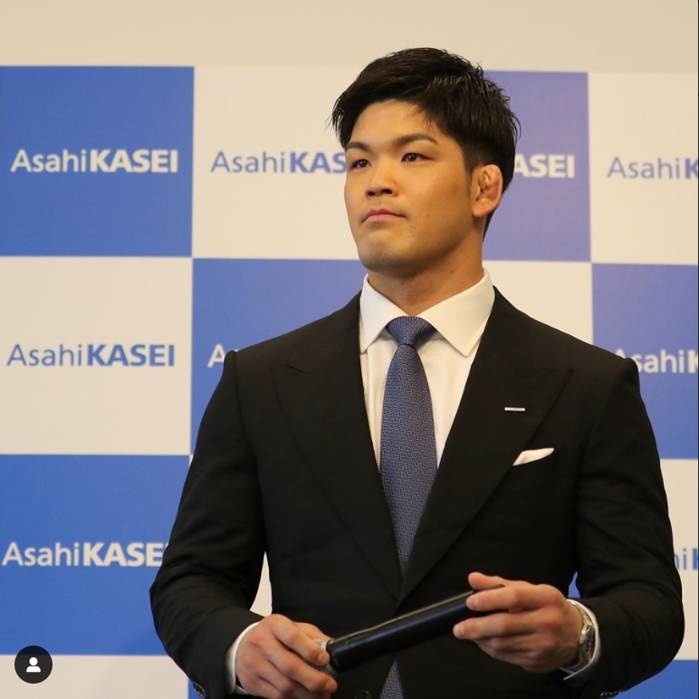

7 septembre 2023 ,
Ono organise un stage de judo
en écosse en compagnie de
Masachi Ebinuma et Kana Ebinuma

30 septembre 2023 ,
Ono en stage en espagne
du 30septembre au 1er octobre

07 Mars 2023 ,
Shohei ono annonce sa retraite
a l'age de 31 après avoir gagnés de
nombreux titre en tant que légende